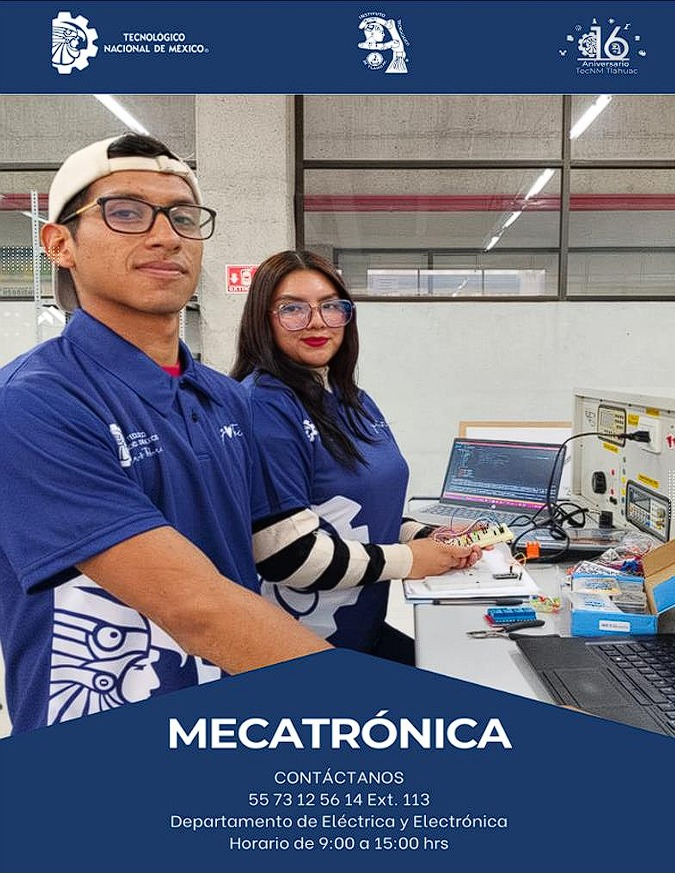
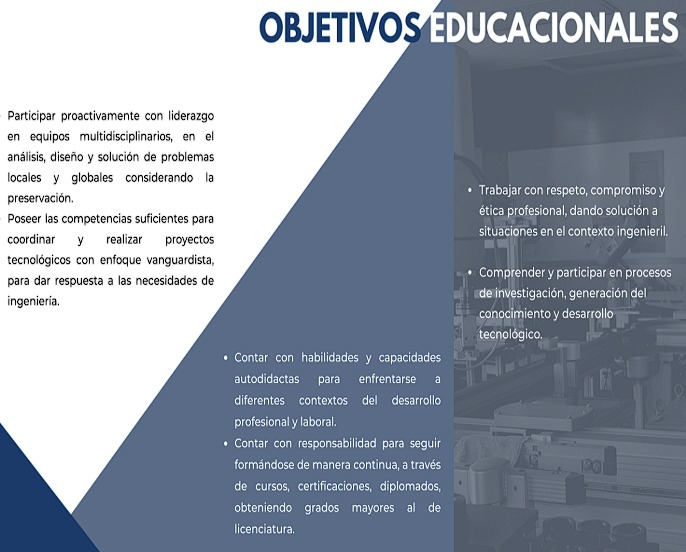

Podemos darle un vistazo al indice del Tecnm Tlahuac 🤖
"LA ESENCIA DE LA GRANDEZA RADICA EN LAS RAÍCES"
"

Podemos darle un vistazo al objetivo general del Tecnm Tlahuac 🤖
"LA ESENCIA DE LA GRANDEZA RADICA EN LAS RAÍCES"
OBJETIVO GENERAL
Formar profesionistas en la ingeniería mecatrónica con capacidad analítica,
crítica y creativa que le permita diseñar, proyectar, construir, innovar y
administrar equipos y sistemas mecatrónicos en el sector social y productivo;
así como integrar, operar y mantenerlos, con un compromiso ético y de
calidad en un marco de desarrollo sustentable.
Podemos darle a el perfil de egreso del Tecnm Tlahuac 🤖
PERFIL DE EGRESO1.- Ejercer su profesión, dentro de un marco legal, teniendo un sentido de
responsabilidad social, con apego a las normas nacionales e internacionales.
2.- Analizar, sintetizar, diseñar, simular, construir e innovar productos,
procesos, equipos y sistemas mecatrónicos, con una actitud investigadora, de
acuerdo a las necesidades tecnológicas y sociales actuales y emergentes,
impactando positivamente en el entorno global.
4.- Evaluar y generar proyectos industriales y de carácter social.
5.- Coordinar y dirigir grupos multidisciplinarios fomentando el trabajo en
equipo para la implementación de proyectos mecatrónicos, asegurando su
calidad,
eficiencia,
productividad y rentabilidad con sentido de
responsabilidad de su entorno social y cultural para un desarrollo sustentable.
6.- Desarrollar capacidades de liderazgo, comunicación e interrelaciones
personales para transmitir ideas, facilitar conocimientos, trabajar en equipos
multidisciplinarios y multiculturales con responsabilidad colectiva para la
solución de problemas y desarrollo de proyectos con un sentido crítico y
autocrítico.
7.- Ser creativo, emprendedor y comprometido con su actualización
profesional continua y autónoma, para estar a la vanguardia en los cambios
científicos y tecnológicos que se dan en el ejercicio de su profesión.
8.- Interpretar información técnica de las áreas que componen la Ingeniería
Mecatrónica para la transferencia, adaptación, asimilación e innovación de
tecnologías de vanguardia.
Podemos darle un vistazo a los atributos de egreso del Tecnm Tlahuac 🤖
ATRIBUTOS DE EGRESO1. Reconocer sus responsabilidades, éticas y profesionales en consideración
con las políticas legales para cumplir con las normas nacionales e
internacionales que apliquen en su desempeño profesional y en el cuidado
del medio ambiente.
2. Construir, analizar, sintetizar, diseñar, simular, e innovar productos,
procesos, equipos y sistemas mecatrónicos, para impactar positivamente en
su entorno con una actitud investigadora, de acuerdo a las necesidades
tecnológicas, sociales actuales y emergentes.
3. Instalar, operar, optimizar, controlar y mantener sistemas mecatrónicos
integrando conocimientos básicos en tecnologías mecánicas, eléctricas,
electrónicas y herramientas computacionales.
4. Planificar, evaluar, generar, administrar y transferir proyectos industriales y
de carácter social para el desarrollo tecnológico.
5. Participar, coordinar y/o dirigir grupos multidisciplinarios, empleando para
su comunicación con el equipo de trabajo el idioma nativo y un segundo
idioma, esto para asegurar la calidad, eficiencia, productividad y rentabilidad
en la implementación de proyectos mecatrónicos con sentido de
responsabilidad de su entorno social y cultural. aplicando el liderazgo, la
comunicación y las relaciones interpersonales.
6. Interpretar información técnica, desarrollar proyectos con un espíritu
innovador, emprendedor y comprometido, para estar a la vanguardia en los
cambios científicos y tecnológicos que se dan en el ejercicio de su profesión.
7. Adquiere conocimientos y desarrolla habilidades lógicas, físico
matemáticas para la comprensión, análisis y solución de problemas dentro
del entorno ingenieril.
Podemos darle un vistazo a los obketivos eduacionales del Tecnm 🤖
OBJETIVOS EDUCACIONALES

Podemos darle un vistazo a la reticula del Tecnm Tlahuac ❤️